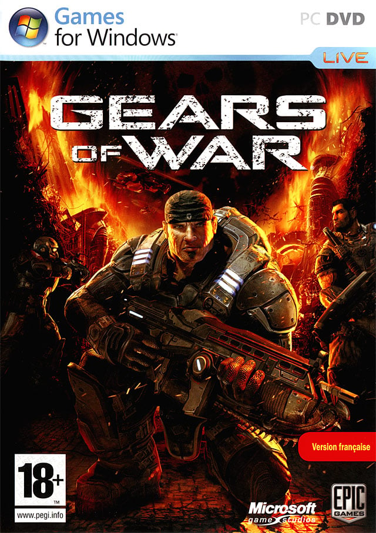

Jeux vidéos
Un jeux Vidéo est un jeu électronique qui implique une intéraction avec une Interface utilasateur ou un périphérique d'entrée pour générer un retour visuel à partir d'un périphérique d'affichage , le plus souvent représenté.
Les jeux vidéos peuvent etre classés en divers types, selon la manière de jouer et le thème qu'ils abordent. C'est le gameplay qui définit la trame narrative, les épreuves, les caractéristiques de l'univers et en somme, le type de jeux.
Les jeux FPS/ TPS
Les jeux FPS pour "First Person Shooter". Ils adoptent le point de vue du personnage, qui est littéralement incarné (le joueur voit à travers ses yeux). On a donc une vision de ce qui se passe devant nous, de nos bras et de l'arme. A titre d'exemple, c'est le point de vue adopté par les très célèbres licences Call of Duty. Ou counter Strike, qui consistent en les références du genre.

Les TPS ("Third Person Shooter) présentent des similarités avec le premier type de jeux de tir. Néanmoins,l'interface du jeux place le gamer derrière le personnage qu'il incarne.On voit donc l'intégralité du corps de l'avatar, ce qui offre de plus grandes possibilités d'action et de déplacements. Il s'agit du point de vue adopté dans la Saga Gears of War,notamment.
Les jeux de combats, ou Versus Fighting
Les RPS
Les jeux de Simulation
Les jeux de Plateforme
Les jeux RPG
Les jeux MMORPG
Les jeux de réflexion